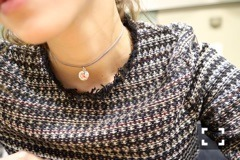

| 2016/11 06 Sun | 斎藤ちはる 名古屋でした◎ |
ちはるーむへようこそ！
#chihaOOTD
今日の個別握手会のコーディネートは
全身ZARAでした( ¨̮ )
choker : ZARA
tops : ZARA
skirt : ZARA
見事に！笑

チョーカーと、トップスを
アップして見るとこんな感じ！
細めのチョーカーは使いやすい♪
しかも3個セットだったので
コスパも良いです。
トップスはツイード素材になっているの！
首元や裾の部分は切りっぱなしになっていて
今っぽい！少しフリンジになってます。
珍しいのでお気に入りです◎
髪の毛はざっくりポニーテールにして
少し抜け感を。
前髪もいつもは分けてるんだけど
分け目を無くすことで
少しだけ子供っぽさをプラス！
服装が大人っぽいからね。
服装もポニーテールも
褒めてもらえて喜びました◎
ギリギリまで悩んでたから◎
今日も来てくれた皆さんありがとうございました！
15thは今日がラストじゃなかったね(> <)
勘違いしてました(> <)
久しぶりに来てくれる方々は
列が長いね！びっくりしたよ！と
嬉しそうに驚いてくれていて
私も嬉しくなりました。
完売が増えている事についても
一緒に喜んでくださって
私は１人じゃないんだなと、実感できます。
いつも支えてくださってありがとう。
また会えるのを楽しみにしてます！
今日会えなかった方にも早く会いたいな。
沢山お話ししたい。
-------------------------♡
♬ ChihaMusic
「セプテンバーさん」Aimerさん
RADさんのカバー曲。
Aimerさんの声が大好きなので
元々大好きなこの曲を
Aimerさんの声で聞けるのが嬉しい。
RADさんとは雰囲気が全然違って
こっちの方が軽やかな気がする。
もうすぐ冬になるからぴったりな曲かも。
"僕が笑える理由なら
今まさに目の前にいるよ"
この歌詞が大好き。
きゅんっとする。
RADさんのセプテンバーさんと
交互に聞くのもまた良きかな。
両方大好き！！
琴子だよ〜(﹡ˆ ˆ﹡)
これ撮る前にひと笑いあったので
琴子のナチュラルな笑顔！
(私がシャッター押すの遅すぎて
琴子が目瞑っちゃったの。)
今日の名古屋はとても寒かった！
もう冬だ〜
皆さん風邪ひかないようにしましょ( ˟_˟ )
おやすみ〜
斎藤ちはる